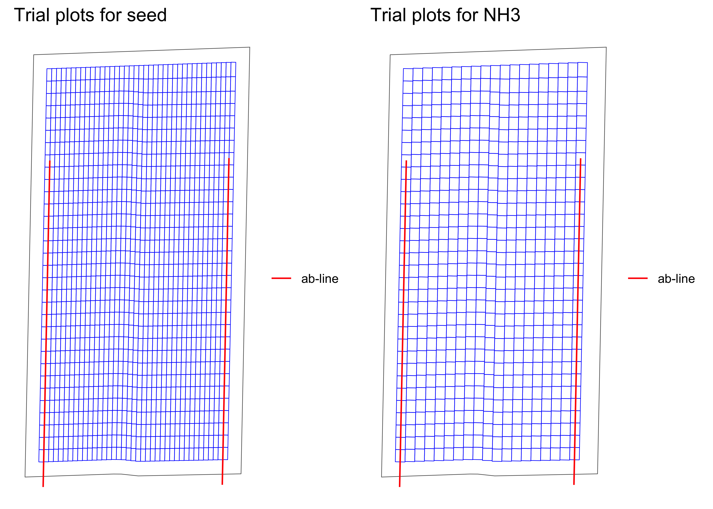
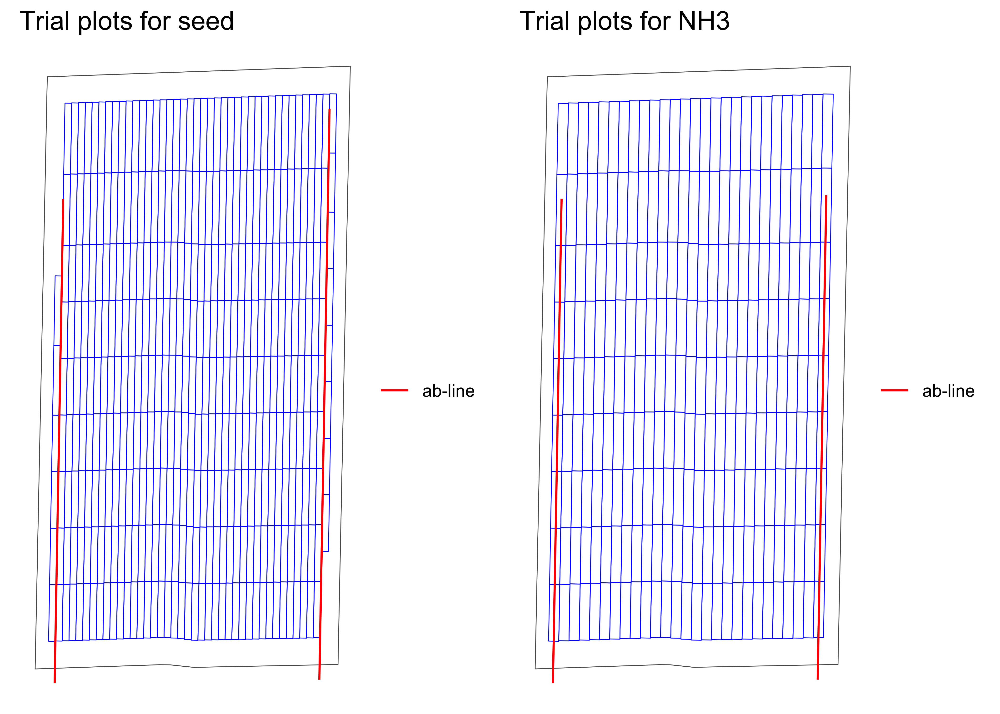

The goal of ofpetrial is to …
You can install the development version of ofpetrial from Github:
devtools::install_github("DIFM-Brain/ofpetrial")
seed_plot_info <-
make_input_plot_data(
form = "seed",
plot_width = 30,
machine_width = 60,
section_num = 24,
length_unit = "feet"
)
#> Note: machine_width and plot_width are converted to meter as length_unit is specified as "feet".
n_plot_info <-
make_input_plot_data(
form = "NH3",
plot_width = measurements::conv_unit(60, "ft", "m"),
machine_width = measurements::conv_unit(60, "ft", "m"),
section_num = 1
)
seed_plot_info
#> form plot_width machine_width
#> 1 seed 9.144 18.288
#> section_num section_width
#> 1 24 0.762
n_plot_info
#> form plot_width machine_width
#> 1 NH3 18.288 18.288
#> section_num section_width
#> 1 1 18.288
input_plot_info <- list(seed_plot_info, n_plot_info)
exp_data <-
make_exp_plots(
input_plot_info = input_plot_info,
boundary_file = system.file("extdata", "boundary-simple1.shp", package = "ofpetrial"),
abline_file = system.file("extdata", "ab-line-simple1.shp", package = "ofpetrial"),
harvester_width = 30,
abline_type = "free",
headland_length = 30,
side_length = 60,
min_plot_length = 200,
max_plot_length = 300,
length_unit = "feet",
perpendicular = FALSE
)
#> Note: length arguments (e.g., harvester_width) are converted to meter as length_unit is specified as "feet".
viz_exp_plots(exp_data)
#!===========================================================
#! Assign rates
#!===========================================================
seed_rate_info <-
make_input_rate_data(
seed_plot_info,
gc_rate = 32000,
unit = "seed",
min_rate = 16000,
max_rate = 40000,
num_rates = 5,
design_type = "jcl"
)
#> Trial rates were not directly specified, so the trial rates were calculated using min_rate, max_rate, gc_rate, and num_rates
n_rate_info <-
make_input_rate_data(
plot_info = n_plot_info,
gc_rate = 180,
unit = "lb",
rates = c(100, 140, 180, 220, 260),
design_type = "jcl",
)
rate_info <- list(seed_rate_info, n_rate_info)
td <- assign_rates(exp_data, rate_info)
viz_td(td)